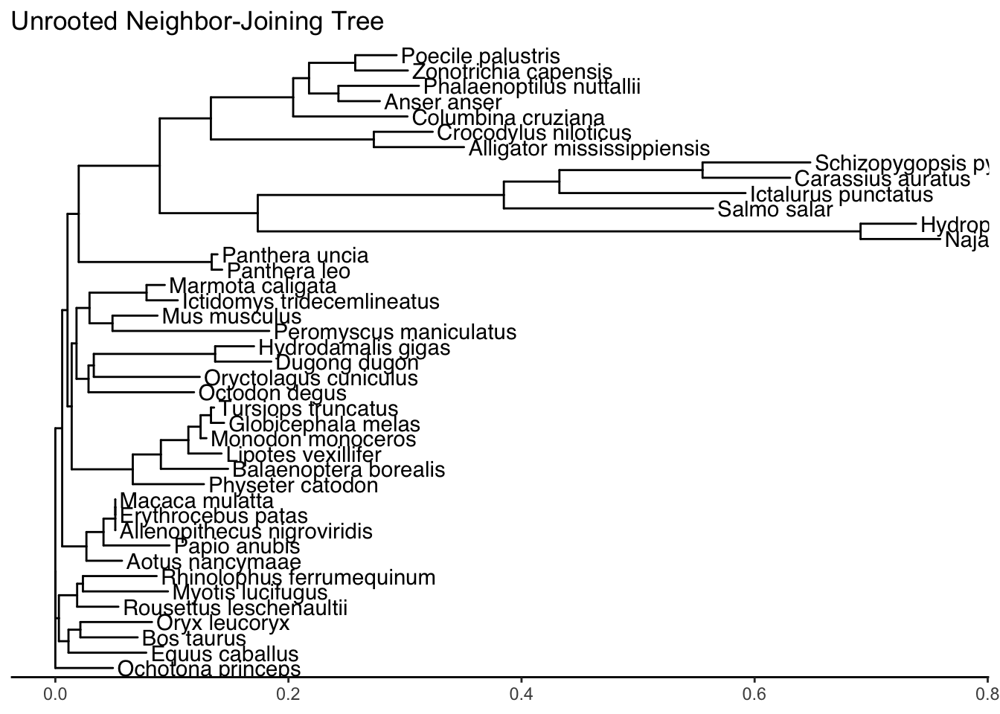
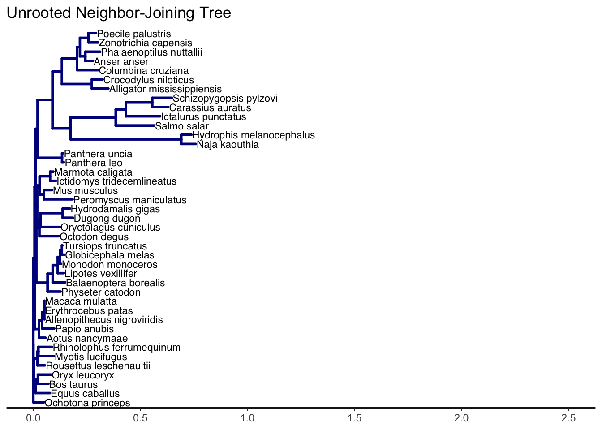
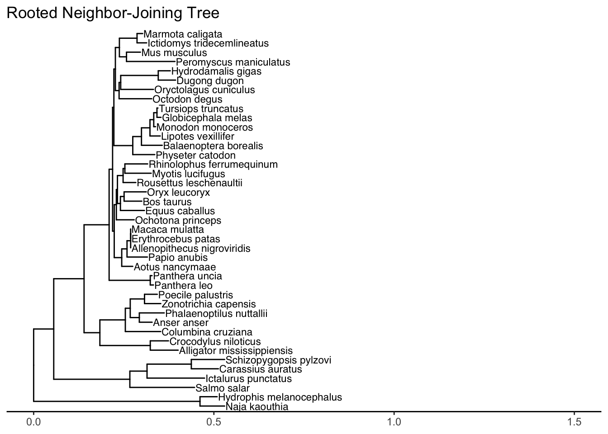
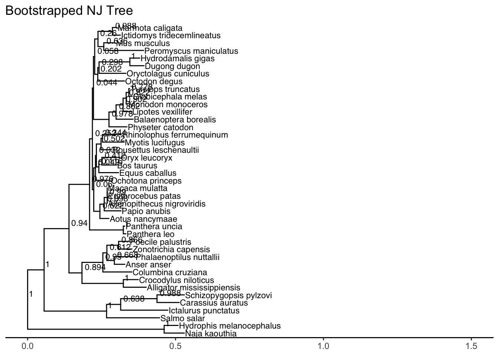
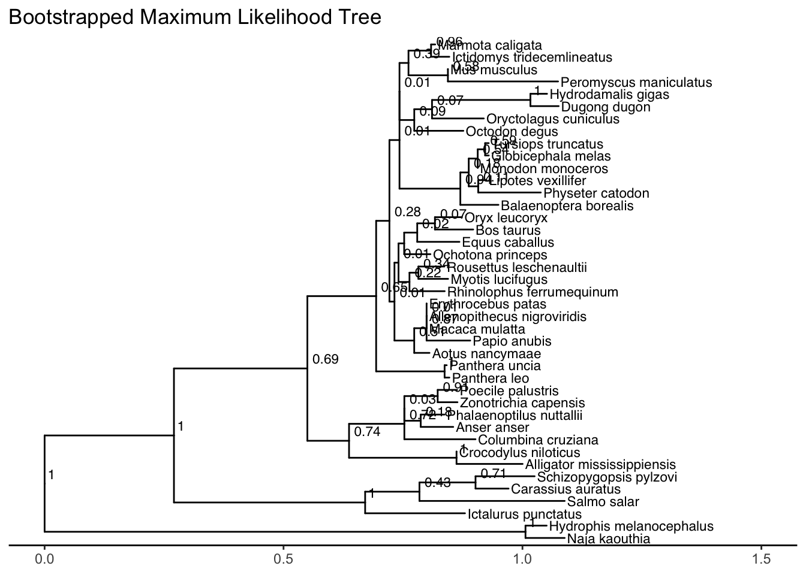
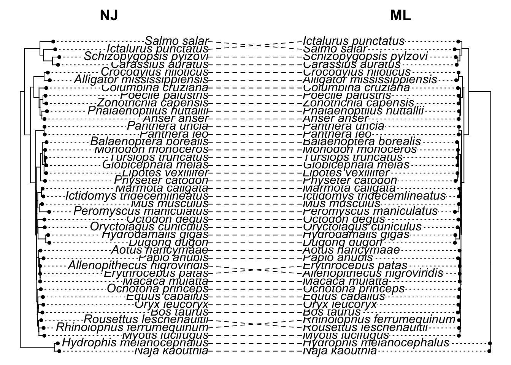

# Installing the package phangorn
install.packages("phangorn")
# Installing the package phytools
install.packages("phytools")
# Installing the package taxize
install.packages("taxize")
# Installing ggtree from Bioconductor
if (!requireNamespace("BiocManager", quietly = TRUE))
install.packages("BiocManager")
BiocManager::install("ggtree")
# lapply is part of the apply family of functions, one of those functions that act as a for loop
lapply(c("ape","seqinr","Biostrings", "tidyverse","msa", "phangorn",
"phytools","stringr","taxize", "ggtree"),
library, character.only = TRUE)6 Lab 7: Using Sequences to Reconstruct Phylogenetic Trees
6.1 Learning objectives
Click to expand
By the end of this lab you will be able to:
Load MSA files into R
Analyze and reconstruct phylogeny based on gene trees
Root trees using an outgroup and by midpoint rooting
Interface with NCBI and download taxonomic information
Assess the confidence of your reconstruction using bootstrap
Optimize and select substitution models for maximum likelihood phylogeny reconstruction
Compare the reconstruction of phylogeny based on different genes
Compare the accuracy of different methodologies for tree reconstruction and inference
Analyze phylogenetic trees
During this week’s lab, you will continue studying the evolutionary relationships between HBA and HBB sequences. You will generate multiple phylogenetic trees (gene trees) and assess their quality.
Note
Note 1: The assignment questions for this week are interspersed throughout the tutorial. They are itemized in the table of contents, so make sure you answer all of them. The due date for the assignment will be announced by the lab instructor.
In order to complete this week’s lab, you will need to install the phangorn package, which extends some of the capabilities of the ape package, especially with respect to incorporating substitution models. You will also need to install the package phytools, which, as its name suggests, has some useful tools to manipulate phylogenetic trees. You will need to download the package taxize, which allows you to download the common names of the organisms from NCBI. Additionally, we will install and use ggtree (part of Bioconductor) to plot our trees beautifully.
Note
Note 2: Install the new packages ASAP, as some might take considerable time and may require you to update many dependencies.
6.2 Multiple sequence alignment
6.2.1 Import last week’s MSA
Last week you generated multiple sequence alignments for the HBA and HBB genes. This week, you will use the amino acid alignments to generate phylogenetic trees. In order to do that, first you will need to import them. You can import the MSA using the read.phyDat() function from phangorn. phyDat is a list-based element used to store alignment information by phangorn.
# This is an example of how to read files using read.phyDat
hba_phy <- read.phyDat("hba_align_aa.fa", type = "AA")6.2.2 Alternative: generate MSA
Alternatively, if you do not have the alignments from last week saved as a FASTA file, or you still have the msa object in your workspace, you can use the msaConvert() function to convert the msa to phyDat. If you have the msa objects in your environment, you can skip to the last step.
First, we will read the unaligned files and clean the organism names.
# Read file and align
hba_aa <- readAAStringSet(
filepath = "https://raw.githubusercontent.com/idohatam/Biol-3315-files/main/HBA_aa.fasta")
hbb_aa <- readAAStringSet(
filepath = "https://raw.githubusercontent.com/idohatam/Biol-3315-files/main/HBB_aa.fasta")
# Remember: need to clean up names
names(hba_aa) <- str_remove_all(str_split_fixed(names(hba_aa),pattern = "\\[", n=2)[,2],"\\]")
names(hbb_aa) <- str_remove_all(str_split_fixed(names(hbb_aa),pattern = "\\[", n=2)[,2],"\\]")
# And make sure both have the same organisms
hba_aa <- hba_aa[which(names(hbb_aa)%in%names(hba_aa))]Next, we generate the alignment and convert it into a phyDat class element.
# Generate MSA
hba_aa_msa <- msa(hba_aa, method = "ClustalW")use default substitution matrix# Convert to a seqinr alignment and then to a phyDat class element
hba_phy <- as.phyDat(msaConvert(hba_aa_msa, "seqinr::alignment"),type = "AA")6.3 Constructing a Neighbor-Joining tree (distance-based reconstruction)
One approach to reconstructing phylogenetic trees is by clustering OTUs based on distance (i.e., forming a distance matrix). There are two main algorithms for constructing distance-based trees: UPGMA and Neighbor-Joining (NJ). UPGMA assumes similar and constant rates of evolution across all OTUs; therefore, the inference of evolutionary relations is error-prone. NJ is more reliable while still being computationally efficient, since it does not make assumptions about evolutionary rates. To generate the distance matrix used to construct the tree, you will use the dist.ml() function from phangorn, which accounts for substitution models. Since you are using an alignment of AA sequences, you will need a model suitable for AA substitution. You will use the Jones-Taylor-Thornton (JTT), an empirical model, to account for AA substitution. Similar to BLOSUM, but accounts for evolutionary history by correcting for multiple substitutions at the same site (i.e., distinguishing between observed and true numbers of substitutions).
# First step is to generate a distance matrix using a substitution model.
# The function dist.ml from phangorn can use 17 different AA substitution models.
# You will use a fairly simple one.
hba_aa_dml <-dist.ml(hba_phy, model = "JTT")
# Next, let's generate a Neighbor-Joining tree
# Note: you will use NJ (capitalized) from phangorn rather than nj from ape to generate the tree
hba_aa_nj <- phangorn::NJ(hba_aa_dml)At this stage, our tree hba_aa_nj is unrooted. Before we explore the topology and bootrapping, let’s introduce a much more robust and beautiful way to visualize phylogenetic trees in R: ggtree.
6.3.1 Plotting and annotating trees with ggtree
The ggtree package extends the famous ggplot2 grammar of graphics to phylogenetic trees. It allows for highly customizable visualizations and annotations, including tips, nodes, labels, and color scales. We will be using ggtree exclusively for tree visualization.
To plot a basic tree, you simply call the ggtree function on your tree object. Let’s add tip labels to it using geom_tiplab(). Notice that similar to ggplot2, layers are added together using the + operator.
# Basic unrooted tree plot with ggtree
ggtree(hba_aa_nj) +
geom_tiplab() +
ggtitle("Unrooted Neighbor-Joining Tree") +
theme_tree2() # adds an x-axis to represent evolutionary distanceWarning: `aes_()` was deprecated in ggplot2 3.0.0.
ℹ Please use tidy evaluation idioms with `aes()`
ℹ The deprecated feature was likely used in the ggtree package.
Please report the issue at <https://github.com/YuLab-SMU/ggtree/issues>.! The tree contained negative edge length. If you want to ignore the edge, you
can set `options(ignore.negative.edge=TRUE)`, then re-run ggtree.Warning in fortify(data, ...): Arguments in `...` must be used.
✖ Problematic arguments:
• as.Date = as.Date
• yscale_mapping = yscale_mapping
• hang = hang
ℹ Did you misspell an argument name?Warning: `aes_string()` was deprecated in ggplot2 3.0.0.
ℹ Please use tidy evaluation idioms with `aes()`.
ℹ See also `vignette("ggplot2-in-packages")` for more information.
ℹ The deprecated feature was likely used in the ggtree package.
Please report the issue at <https://github.com/YuLab-SMU/ggtree/issues>.
Because ggtree objects are ggplot objects, you can use common ggplot modifiers (e.g., xlim to increase the space for the tip labels to show completely) and other aesthetic adjustments. You can also color branches or change their thickness.
# Adjusting the plot to ensure labels fit
ggtree(hba_aa_nj, color = "darkblue", linewidth = 1) +
geom_tiplab(size = 3) +
ggtitle("Unrooted Neighbor-Joining Tree") +
theme_tree2() +
xlim(0, 2.5) # Expand the x-axis limits to fit the labels! The tree contained negative edge length. If you want to ignore the edge, you
can set `options(ignore.negative.edge=TRUE)`, then re-run ggtree.Warning in fortify(data, ...): Arguments in `...` must be used.
✖ Problematic arguments:
• as.Date = as.Date
• yscale_mapping = yscale_mapping
• hang = hang
• color = "darkblue"
• linewidth = 1
ℹ Did you misspell an argument name?
6.3.2 Rooting the tree
Next, let’s root the tree. Since we don’t yet have a good understanding of the groups making up the tree, you will use midpoint rooting, which places the root at the midpoint between the two OTUs with the longest connecting path. Use the ? operator to figure out how to use the function midpoint().
?midpointNow, let’s apply the rooting to our NJ tree and plot it using ggtree.
hba_aa_nj <- midpoint(hba_aa_nj)
ggtree(hba_aa_nj) +
geom_tiplab(size = 3) +
theme_tree2() +
xlim(0, 1.5) +
ggtitle("Rooted Neighbor-Joining Tree")! The tree contained negative edge length. If you want to ignore the edge, you
can set `options(ignore.negative.edge=TRUE)`, then re-run ggtree.Warning in fortify(data, ...): Arguments in `...` must be used.
✖ Problematic arguments:
• as.Date = as.Date
• yscale_mapping = yscale_mapping
• hang = hang
ℹ Did you misspell an argument name?
6.3.3 Bootstrapping the tree
There are multiple ways to root trees, and there are multiple possible unrooted trees that could be constructed when reconstructing phylogeny; however, only one of these trees is the true tree. While we have no way of knowing which is the true tree, we can statistically assess the confidence in our tree topology. One way to assess this is by using bootstrap, which is an iterative algorithm to generate multiple random pseudoreplicates of the tree using the MSA and assessing how many of them agree with the tree topology. Bootstrapping requires a tree and the phyDat object generated at the beginning of the lab.
# Use the bootstrap.phyDat function to calculate the bootstrap values of the tree
# Remember: bootstrapping randomizes the columns of the alignment and generates pseudoreplicates
# of the tree.
# How would you make sure that the results of bootstrapping are reproducible?
# Here we are bootstrapping the HBA alignment; it is important to choose the same model.
# A good practice is to run bootstrap with at least 1000 iterations. You will run it 500 times, a
# good compromise between accuracy and computational power.
hba_aa_nj_bs <-bootstrap.phyDat(hba_phy,
# Note: the function is passed as an anonymous function
FUN = function(x)NJ(dist.ml(x, model = "JTT")),bs=500)We now have the bootstrap values. Typically, we plot these values as node labels onto our tree. To map bootstrap values onto our NJ tree, we need to assign them to the node.label slot of our original tree. With ggtree, you can extract and display bootstrap values using geom_nodelab(). By convention, bootstrap values are shown on branches or nodes, usually omitting lower confidence ones (e.g. < 50%).
# Assign the bootstrap values to the tree's nodes
# Since tree nodes include the tips but bootstrap values only apply to internal nodes,
# we need to be careful. The plotBS function from phangorn returns a tree with assigned node labels.
hba_aa_nj_booted <- plotBS(hba_aa_nj, hba_aa_nj_bs, type = "none")
# Now we plot it with ggtree, adding bootstrap values at the nodes
ggtree(hba_aa_nj_booted) +
geom_tiplab(size = 3) +
geom_nodelab(aes(label = label), hjust = -0.1, vjust = -0.5, size = 3) +
theme_tree2() +
xlim(0, 1.5) +
ggtitle("Bootstrapped NJ Tree")! The tree contained negative edge length. If you want to ignore the edge, you
can set `options(ignore.negative.edge=TRUE)`, then re-run ggtree.Warning in fortify(data, ...): Arguments in `...` must be used.
✖ Problematic arguments:
• as.Date = as.Date
• yscale_mapping = yscale_mapping
• hang = hang
ℹ Did you misspell an argument name?
6.4 Question 1
A. Generate a bootstrapped Neighbor-Joining tree for HBB and HBA. Make sure that your code takes into account the randomization of the bootstrap method and allows reproducibility. Show your code and make sure to comment (2 marks).
B. Print both trees using ggtree; insert a descriptive plot title. Save the plots as PDFs and add them to your assignment. Show your code (2 marks).
C. The HBA tree has areas with bootstrap values lower than 50%. Do these areas have higher bootstrap values using HBB? What does it tell you about the resolving power of the HBs (2 marks)?
6.5 Constructing a maximum likelihood tree (character- and distance-based reconstruction)
Distance-based approaches are rapid but less robust than character-based methods, since all they do is cluster based on distances. Maximum likelihood is an algorithm that calculates the likelihood that trees generated using a certain substitution model represent evolutionary events.
The function modelTest() from the package phangorn allows you to test which model is the best fit to construct the tree with a maximum likelihood algorithm. The output is a dataframe with log-likelihood and several estimators of prediction error (i.e., how accurate is the prediction that the model fits). We will use Akaike information criterion (AIC). The test also offers a second estimator, Bayesian information criterion (BIC), which uses Bayesian inference. You can read more about them here. In either case, you will select the model with the lowest prediction error.
# Let's use the modelTest function
mt <- modelTest(hba_phy, model=c("JTT", "LG", "WAG"))Model df logLik AIC BIC
JTT 79 -3636.873 7431.747 7665.811
JTT+I 80 -3557.437 7274.875 7511.903
JTT+G(4) 80 -3469.286 7098.572 7335.6
JTT+G(4)+I 81 -3467.458 7096.915 7336.906
LG 79 -3651.974 7461.948 7696.013
LG+I 80 -3569.097 7298.194 7535.222
LG+G(4) 80 -3471.142 7102.284 7339.311
LG+G(4)+I 81 -3469.69 7101.379 7341.37
WAG 79 -3645.585 7449.17 7683.235
WAG+I 80 -3561.317 7282.634 7519.662
WAG+G(4) 80 -3478.868 7117.736 7354.764
WAG+G(4)+I 81 -3476.672 7115.345 7355.335 # Print the results
mt Model df logLik AIC AICw AICc AICcw BIC
1 JTT 79 -3636.873 7431.747 1.215758e-73 7632.381 2.515393e-71 7665.811
2 JTT+I 80 -3557.437 7274.875 1.409542e-39 7483.907 4.379031e-39 7511.903
3 JTT+G(4) 80 -3469.286 7098.572 2.708235e-01 7307.605 8.413683e-01 7335.600
4 JTT+G(4)+I 81 -3467.458 7096.915 6.201887e-01 7314.686 2.439722e-02 7336.906
5 LG 79 -3651.974 7461.948 3.362780e-80 7662.583 6.957559e-78 7696.013
6 LG+I 80 -3569.097 7298.194 1.217247e-44 7507.226 3.781626e-44 7535.222
7 LG+G(4) 80 -3471.142 7102.284 4.234573e-02 7311.316 1.315556e-01 7339.311
8 LG+G(4)+I 81 -3469.690 7101.379 6.656172e-02 7319.150 2.618430e-03 7341.370
9 WAG 79 -3645.585 7449.170 2.001546e-77 7649.805 4.141179e-75 7683.235
10 WAG+I 80 -3561.317 7282.634 2.911966e-41 7491.666 9.046614e-41 7519.662
11 WAG+G(4) 80 -3478.868 7117.736 1.867629e-05 7326.769 5.802170e-05 7354.764
12 WAG+G(4)+I 81 -3476.672 7115.345 6.174971e-05 7333.115 2.429134e-06 7355.335# Which model has the lowest AIC?
mt$Model[mt$AIC==min(mt$AIC)][1] "JTT+G(4)+I"Looks like JTT is a good model to select; however, the test indicates the parameters G and I should be added to the model. G indicates gamma distribution, which assumes that the rate of evolution is unequal among OTUs, and I indicates invariant sites—i.e., assuming that some sites cannot be mutated (e.g., sites critically important to protein function). Both parameters are reasonable considering that some areas are important to hemoglobin function and that mutation rates are different between different species.
Next, let’s use the model to construct a tree using maximum likelihood.
# Next, let's use the NJ tree and the model selected by modelTest to rearrange the tree topology such
# that it represents the tree with the largest likelihood to be the true evolutionary tree.
# The output is a list-like object of class pml.
# K is the number of intervals for gamma distribution
# inv is the proportion of invariable sites
hba_aa_nj.pml <- pml(hba_aa_nj,hba_phy,model="JTT",k=4,inv=.2)Initially we set the parameters of the model; now that we have the tree, let’s optimize the parameters of the model with optim.pml. This will take some time to complete.
# Optimize tree parameters
hba_aa_nj.pml <- optim.pml(hba_aa_nj.pml,optNni=TRUE,optBf=TRUE,optQ=TRUE,optInv=TRUE,optGamma=TRUE,optEdge=TRUE)Warning: I unrooted the tree
Important
Important
Important: The tree generated by pml is unrooted. Before you proceed, make sure to root the tree using midpoint rooting.
6.5.1 Bootstrap the maximum likelihood tree
Just like with the NJ tree, we can assess the support of each of the edges. The function bootstrap.pml() performs bootstrap on ML trees.
# Note that here we are only performing 100 iterations since more would take a lot of computational power
hba_aa_nj.pml.bs <- bootstrap.pml(hba_aa_nj.pml,bs=100,trees=TRUE,optNni=TRUE)Now we assign the bootstrap values back to the optimized tree and plot it.
# Transfer bootstrap values to the tree node labels
hba_aa_ml_booted <- plotBS(hba_aa_nj.pml$tree, hba_aa_nj.pml.bs, type = "none")
# Use midpoint rooting
hba_aa_ml_booted <- midpoint(hba_aa_ml_booted)
# Plot the tree
ggtree(hba_aa_ml_booted) +
geom_tiplab(size = 3) +
geom_nodelab(aes(label = label), hjust = -0.1, vjust = -0.5, size = 3) +
theme_tree2() +
xlim(0, 1.5) +
ggtitle("Bootstrapped Maximum Likelihood Tree")Warning in fortify(data, ...): Arguments in `...` must be used.
✖ Problematic arguments:
• as.Date = as.Date
• yscale_mapping = yscale_mapping
• hang = hang
ℹ Did you misspell an argument name?
6.6 Question 2
A. Generate a bootstrapped maximum likelihood tree for HBB and HBA. Make sure that your code takes into account the randomization of the bootstrap method and allows reproducibility. Show your code and make sure to comment (2 marks).
B. Print both trees using ggtree; insert a descriptive plot title. Save the plots as PDFs and add them to your assignment. Show your code (2 marks).
C. Compare the bootstrap values of the ML trees to the NJ trees. Do ML bootstrap values offer better support to branches of the tree (2 marks)?
6.7 Comparing trees
Last, let’s compare the trees that you generated today. You have already used the function tanglegram() from dendextend to compare the topology of dendrograms. The package phytools offers the function cophylo(), which allows for a similar comparison of phylogenetic trees.
But first…curious about what animals we have been working with? Let’s find out.
First, we will extract the current species names (the scientific names) from the trees’ tip labels.
# We are going to modify the tips of the trees, so let's copy them just in case you need them again
hba_aa_nj2 <- hba_aa_nj
hba_aa_nj.pml2 <- hba_aa_nj.pml
# Next, let's get species names; they are the tip labels
# The order is important, so we will get it for each tree
sp1 <- hba_aa_nj2$tip.label
sp2 <- hba_aa_nj.pml2$tree$tip.labelNow, using the taxize package, we will query NCBI to retrieve the common names for each species.
# Now let's get the common names of the organisms from NCBI
# Using the updated taxize function tax_name
cnames <- tax_name(query = sp1, get = "common", db = "ncbi")Warning: The `query` argument of `tax_name()` is deprecated as of taxize v0.9.97.
ℹ Please use the `sci` argument instead.cnames2 <- tax_name(query = sp2, get = "common", db = "ncbi")
# Extract the common names from the returned dataframe
# The common names are in the 'common' column
a <- cnames$common
a2 <- cnames2$commonBefore we continue, let’s see if we have all the common names or if we have some missing values. Missing values will normally be denoted as NAs, and they can mess with downstream processes. As bioinformaticians, you will have to inspect data all the time for missing values and decide how to handle them. Here we will just use the scientific names. R has several functions to check for missing values. For 1D objects, is.na() is great, but for elements with 2D, you can use the function complete.cases() from the stats package, which is part of baseR.
# Are there any NAs?
which(is.na(a)) [1] 1 2 3 4 5 6 7 8 9 10 11 12 13 14 15 16 17 18 19 20 21 22 23 24 25
[26] 26 27 28 29 30 31 32 33 34 35 36 37 38 39 40 41Looks like we have some missing values; we will complete them from the original species list.
# Note how I subset the relevant values
a[which(is.na(a))] <- sp1[which(is.na(a))]
# Now for the ML tree as well
# Remember: the order of the tips on the tree might be different, and that's why we can't use only
# one list
a2[which(is.na(a2))] <- sp2[which(is.na(a2))]
a2 [1] "Carassius auratus" "Schizopygopsis pylzovi"
[3] "Ictalurus punctatus" "Salmo salar"
[5] "Dugong dugon" "Hydrodamalis gigas"
[7] "Oryctolagus cuniculus" "Octodon degus"
[9] "Peromyscus maniculatus" "Mus musculus"
[11] "Ictidomys tridecemlineatus" "Marmota caligata"
[13] "Globicephala melas" "Tursiops truncatus"
[15] "Monodon monoceros" "Lipotes vexillifer"
[17] "Balaenoptera borealis" "Physeter catodon"
[19] "Rousettus leschenaultii" "Myotis lucifugus"
[21] "Rhinolophus ferrumequinum" "Erythrocebus patas"
[23] "Papio anubis" "Aotus nancymaae"
[25] "Ochotona princeps" "Bos taurus"
[27] "Oryx leucoryx" "Equus caballus"
[29] "Panthera leo" "Panthera uncia"
[31] "Alligator mississippiensis" "Crocodylus niloticus"
[33] "Anser anser" "Phalaenoptilus nuttallii"
[35] "Zonotrichia capensis" "Poecile palustris"
[37] "Columbina cruziana" "Naja kaouthia"
[39] "Hydrophis melanocephalus" "Macaca mulatta"
[41] "Allenopithecus nigroviridis"# Now let's change the tips of the trees
hba_aa_nj2$tip.label <- a
hba_aa_nj.pml2$tree$tip.label <- a2Finally, let’s compare trees with cophylo(). Note that cophylo() objects are natively plotted with base R graphics rather than ggtree, so we will use the plot() function for this specific comparison step.
# Here I am comparing the NJ and ML trees of HBA
# Note how I access the ML tree
obj <- cophylo(hba_aa_nj2, hba_aa_nj.pml2$tree)Rotating nodes to optimize matching...
Done.# Plotting the trees
par(mfrow=c(1,1))
# mar sets the margins of the plot
plot(obj,mar=c(.1,.1,2,.1))
# Title is self-explanatory
title("NJ ML")
6.8 Question 3
A. Compare the following trees using cophylo(): NJ and ML of HBA, NJ and ML of HBB, ML of HBA and ML of HBB (three comparisons in total). Show your code, save the trees as PDF files, and attach them to your assignment (2 marks).
B. Are there any clades that changed between HBA and HBB using ML (2 marks)?
C. Are there any clades that changed between NJ and ML? Does it significantly change the tree (i.e., do you see mammals clustering with fish all of a sudden) (2 marks)?
D. HBA trees denote some snakes as a possible outgroup. What taxonomic group do they belong to (e.g., is it a mammal)? Are there any other members of that taxonomic group on that tree? What does it tell you about this group (e.g., is it really monophyletic) (2 marks)?